Week 4: Visualizing Data#
Clear the entire workspace#
rm(list = ls())
Load libraries#
ReqdLibs = c("readxl","ggplot2","ggthemes","dplyr","tidyr","forcats","janitor","IRdisplay","patchwork","svglite")
invisible(lapply(ReqdLibs, library, character.only = TRUE))
Attaching package: ‘dplyr’
The following objects are masked from ‘package:stats’:
filter, lag
The following objects are masked from ‘package:base’:
intersect, setdiff, setequal, union
Attaching package: ‘janitor’
The following objects are masked from ‘package:stats’:
chisq.test, fisher.test
A. The Anatomy of a GGPLOT#
Image Source: https://ggplot2.tidyverse.org/articles/ggplot2.html
1. The Data#
This is the foundation of your whole graphical edifice, which you define through the function ggplot().
Make sure it is not wrong (or absent!)
options(repr.plot.width = 7, repr.plot.height = 7)
ggplot(data = mpg)
2. The Mapping#
This is where you define the fundamental descriptors of the graph through the function aes().
What you define here are the elements of your graph and those elements are directly linked to the number of information carrying dimensions of your data (Tufte, Chap. 2, Visual Display of Quantitative Information, \(2^{nd}\) Ed).
ggplot(mpg, mapping = aes(x = cty, y = hwy))
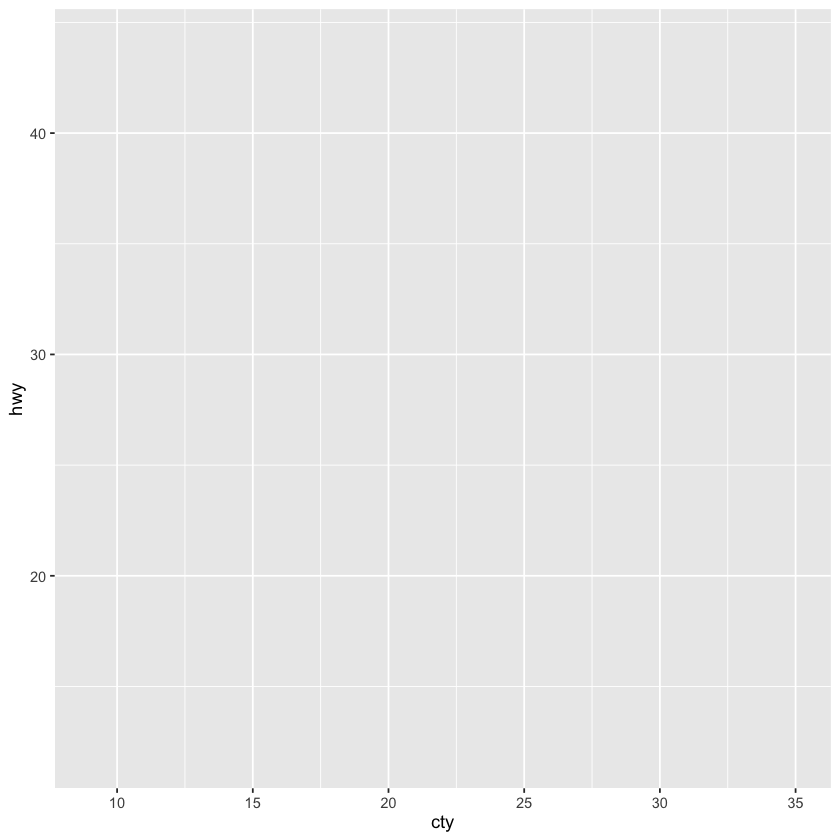
3. The Layers#
This is where you define the geometric, statistical, or positional elements of the data through the geom_*(), stat_*(), or position_* function respectively.
This is where all the action happens and something actually appears on your plot!
ggplot(mpg, aes(cty, hwy)) +
# to create a scatterplot
geom_point() +
# to fit and overlay a regression line
geom_smooth(formula = y ~ x, method = "lm")
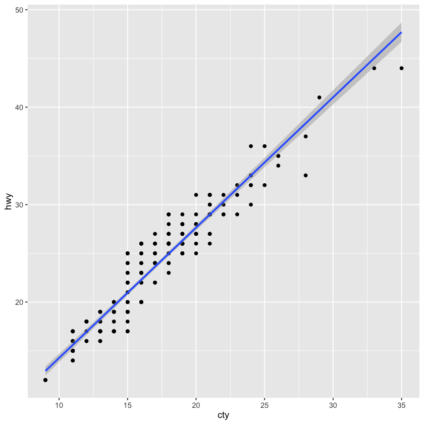
4. Enhancements#
Scales, Facets, Coordinates, and Theme allow you to modify the appearance of each and every element in your plot specified by the mapping and the layers, through functions scale_*(), facet_*(), coord_*(), and theme().
Scales#
Control the mapping between data values and visual properties (color, size, shape, axes)
ggplot(mpg, aes(cty, hwy, colour = class)) +
geom_point() +
scale_colour_viridis_d()
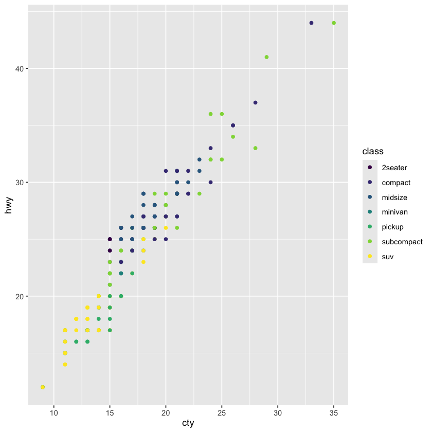
Facets#
Split data into subsets and display them as multiple panels in a single plot
options(repr.plot.width = 10, repr.plot.height = 8)
ggplot(mpg, aes(cty, hwy)) +
geom_point() +
facet_grid(year ~ drv)
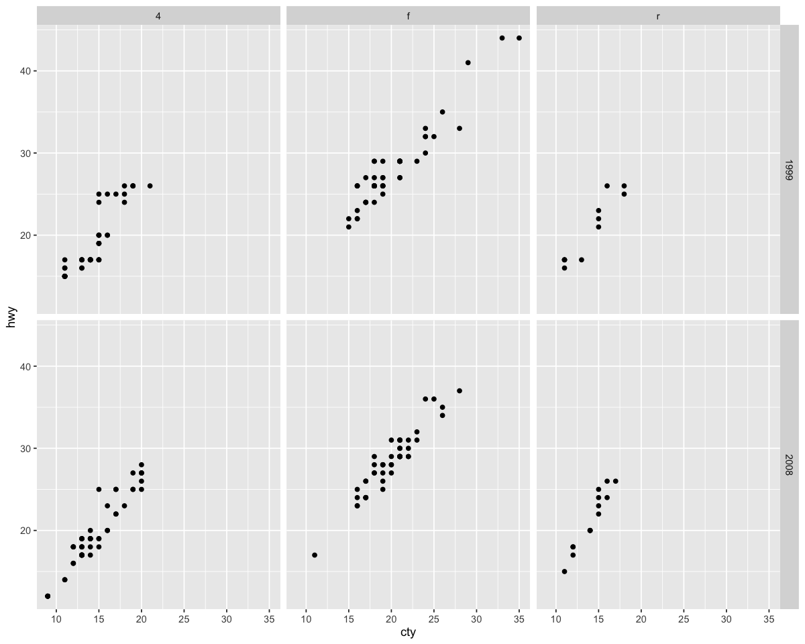
Coordinates#
Transform the coordinate system of the plot (flip axes, use polar coordinates, set limits)
ggplot(mpg, aes(cty, hwy)) +
geom_point() +
coord_fixed()
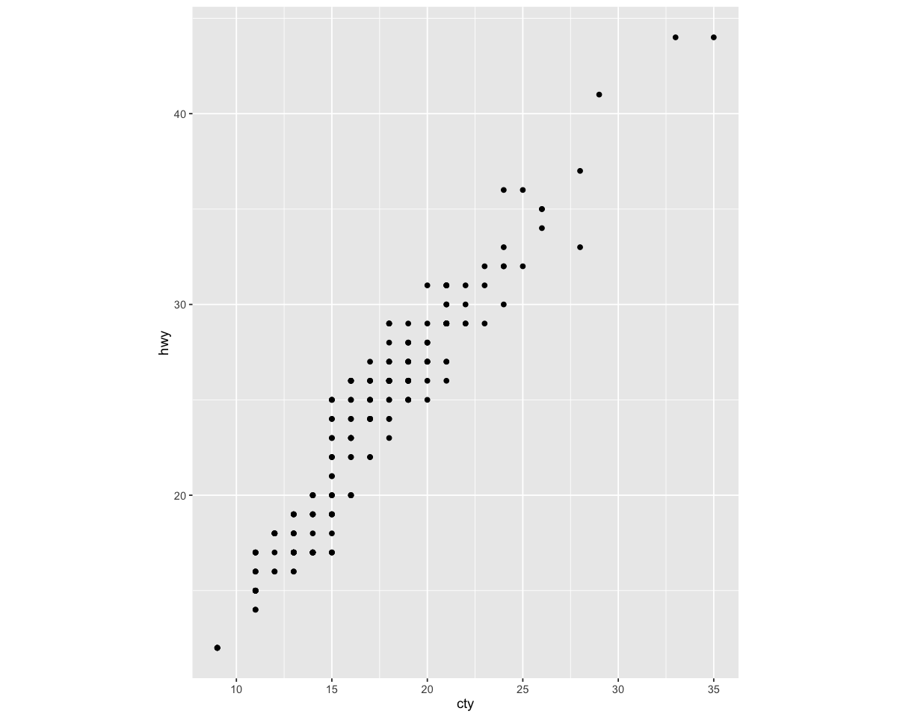
Theme#
Customize the non-data elements of the plot (fonts, colors, grid lines, backgrounds)
thm = theme(
legend.position = "top",
legend.text=element_text(size=16,face="bold"),
axis.line = element_line(linewidth = 0.75),
axis.text = element_text(colour = "black",size=35),
text = element_text(colour = "black",size=35)
)
ggplot(mpg, aes(cty, hwy, colour = class)) +
geom_point(size = 4) +
theme_minimal() + thm
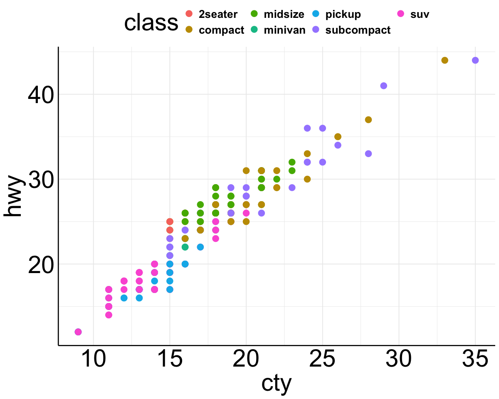
All together#
options(repr.plot.width = 10, repr.plot.height = 10)
ggplot(mpg, aes(cty, hwy)) +
geom_point(mapping = aes(colour = displ)) +
geom_smooth(formula = y ~ x, method = "lm") +
scale_colour_viridis_c() +
facet_grid(year ~ drv) +
labs(title = "something awesome", x = "city (number)", y = "highway (miles)", col = "displacement") +
coord_fixed() +
theme_tufte() +
theme(
legend.position = "top",
legend.text=element_text(size=16,face="bold"),
axis.line = element_line(linewidth = 0.75),
axis.text = element_text(colour = "black",size=20),
text = element_text(colour = "black",size=20)
)
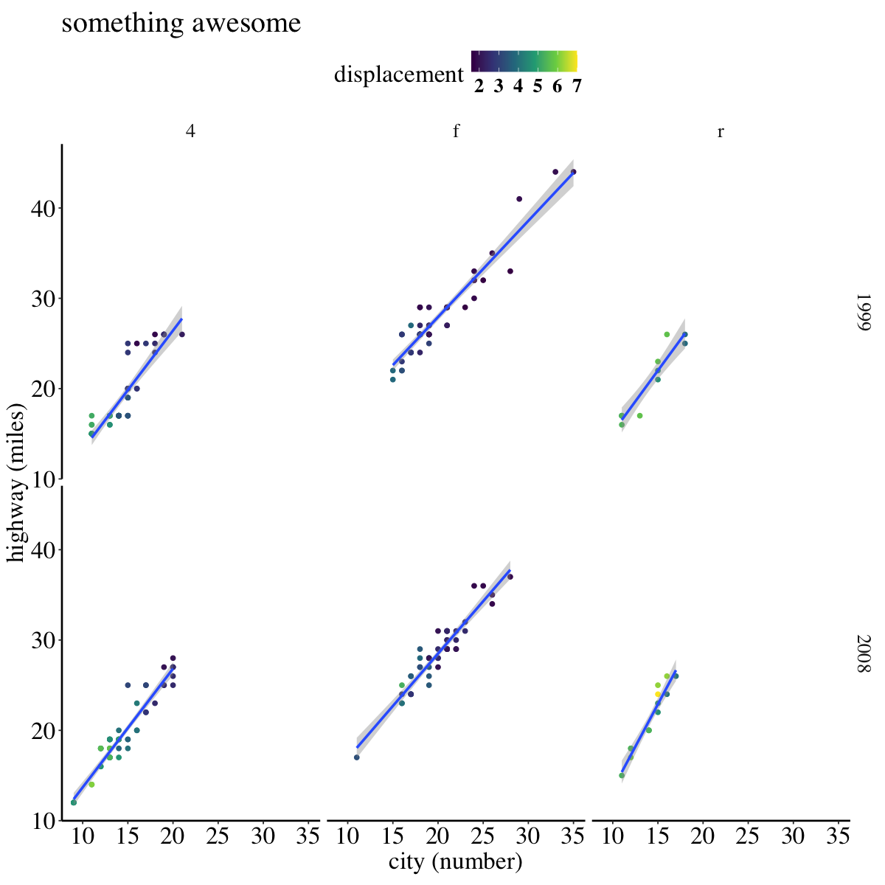
B. Reproducing a figure using GGPLOT#
Let’s now reproduce the bottom-right panel of Figure 5 from the paper. It’s shown below for reference:
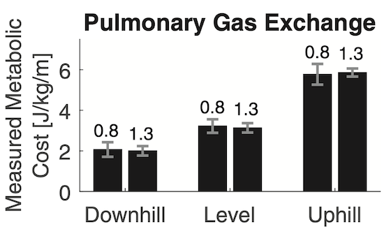
Import data#
dat.raw = read.csv(file = "rawdata.csv", header = TRUE)
tail(dat.raw)
dim(dat.raw)
| X | t | R | VT | VE | VO2 | Sub | trial | |
|---|---|---|---|---|---|---|---|---|
| <int> | <int> | <dbl> | <dbl> | <dbl> | <dbl> | <chr> | <chr> | |
| 15057 | 15057 | 426 | 0.8729754 | 0.6416436 | 14.473163 | 509.72379 | Sub9 | trial 6 |
| 15058 | 15058 | 429 | 0.9632060 | 0.5324928 | 11.055213 | 361.50629 | Sub9 | trial 6 |
| 15059 | 15059 | 431 | 0.9126303 | 0.8946287 | 23.963267 | 873.85555 | Sub9 | trial 6 |
| 15060 | 15060 | 434 | 0.8497735 | 0.5273923 | 14.582274 | 494.51991 | Sub9 | trial 6 |
| 15061 | 15061 | 435 | 0.8142049 | 0.4304827 | 14.675545 | 394.51961 | Sub9 | trial 6 |
| 15062 | 15062 | 437 | 0.4978951 | 0.1407739 | 4.590455 | 35.72638 | Sub9 | trial 6 |
- 15062
- 8
Transform data#
Reordering Sub factor#
so that it is sorted numerically rather than alphabetically
levels(as.factor(dat.raw$Sub))
- 'Sub1'
- 'Sub10'
- 'Sub11'
- 'Sub12'
- 'Sub13'
- 'Sub2'
- 'Sub3'
- 'Sub4'
- 'Sub5'
- 'Sub6'
- 'Sub7'
- 'Sub8'
- 'Sub9'
# reorder the Sub factor so that it is sorted numerically rather than alphabetically
# fct_reorder is in the forcats package which does not rely on 'exact' names for reordering
# gsub or global substitution funcn that looks for a specific text pattern (regex) and replaces it
# (kind of like ctrl F & replace)
dat.raw$Sub <- fct_reorder(dat.raw$Sub, as.numeric(gsub("Sub", "", dat.raw$Sub)))
levels(dat.raw$Sub)
- 'Sub1'
- 'Sub2'
- 'Sub3'
- 'Sub4'
- 'Sub5'
- 'Sub6'
- 'Sub7'
- 'Sub8'
- 'Sub9'
- 'Sub10'
- 'Sub11'
- 'Sub12'
- 'Sub13'
Trial = experimental manipulations!#
All participants did 1 single trial walking under different conditions. Hence, we have 6 trials + rest.
But, trial as a variable is pretty uninformative. We want to understand what these trials mean so that we can plot how some response, y (\(VO_{2}\) etc) changed as a result of the independently manipulated variable, x (incline or speed).
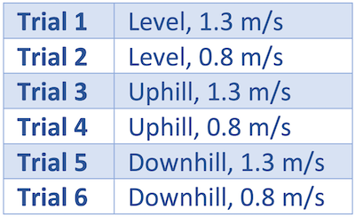
# based on above, we define trial number (conditions) that match the incline and speeds
# these are 'condition sets' which we will call when we apply conditional logics next.
# inclines
lev = c("1","2")
uph = c("3","4")
dwh = c("5","6")
# speeds
fs = c("1","3","5")
sl = c("2","4","6")
dat.raw %>%
# so we can refer to those trial conditions more succinctly
# let's separate these characters into workable parts
separate(trial,into=c("prefix","num"), sep = " ",fill="right",remove = FALSE) %>%
# "rest" level is different from other trials (format: prefix + num),
# so we fill out the new variable num with "rest"
mutate(num = if_else(prefix == "rest", prefix, num)) %>%
# now we are ready to define some new informative variables from our non-informative variable "num"
mutate(cond = if_else(num == "rest", num, "walk"),
incline = case_when(num %in% lev ~ "level",
num %in% uph ~ "uphill",
num %in% dwh ~ "downhill",
num == "rest" ~ "rest",
TRUE ~ NA_character_),
speed = case_when(num %in% fs ~ 1.3,
num %in% sl ~ 0.8,
cond == "rest" ~ 0,
TRUE ~ NA_real_)) %>%
# remove unwanted variables
select(!c("X","prefix","num")) %>%
# assign to a new 'defined' data frame
{.->> dat.def}
tail(dat.def)
| t | R | VT | VE | VO2 | Sub | trial | cond | incline | speed | |
|---|---|---|---|---|---|---|---|---|---|---|
| <int> | <dbl> | <dbl> | <dbl> | <dbl> | <fct> | <chr> | <chr> | <chr> | <dbl> | |
| 15057 | 426 | 0.8729754 | 0.6416436 | 14.473163 | 509.72379 | Sub9 | trial 6 | walk | downhill | 0.8 |
| 15058 | 429 | 0.9632060 | 0.5324928 | 11.055213 | 361.50629 | Sub9 | trial 6 | walk | downhill | 0.8 |
| 15059 | 431 | 0.9126303 | 0.8946287 | 23.963267 | 873.85555 | Sub9 | trial 6 | walk | downhill | 0.8 |
| 15060 | 434 | 0.8497735 | 0.5273923 | 14.582274 | 494.51991 | Sub9 | trial 6 | walk | downhill | 0.8 |
| 15061 | 435 | 0.8142049 | 0.4304827 | 14.675545 | 394.51961 | Sub9 | trial 6 | walk | downhill | 0.8 |
| 15062 | 437 | 0.4978951 | 0.1407739 | 4.590455 | 35.72638 | Sub9 | trial 6 | walk | downhill | 0.8 |
Trimming time t#
From the Koelewijn et al paper: “The first 30 seconds of the resting trial, and the first three minutes of each walking trial were disregarded. The rate of oxygen consumption, \(VO_{2}\) in mL/min/kg, and respiratory quotient, \(R\) were averaged over time.”
rmv.rest = 30 #(seconds)
rmv.walk = 3*60 #(min*second/min)
dat.def %>%
filter(case_when(cond == "rest" ~ t > rmv.rest,
cond == "walk" ~ t > rmv.walk,
TRUE ~ FALSE)) %>%
group_by(Sub,cond,incline,speed) %>%
summarize_if(is.double, ~ mean(., na.rm = TRUE)) %>%
{.->>dat.summ}
head(dat.summ,7)
| Sub | cond | incline | speed | R | VT | VE | VO2 |
|---|---|---|---|---|---|---|---|
| <fct> | <chr> | <chr> | <dbl> | <dbl> | <dbl> | <dbl> | <dbl> |
| Sub1 | rest | rest | 0.0 | 1.0537845 | 0.7031141 | 12.16978 | 328.9456 |
| Sub1 | walk | downhill | 0.8 | 0.9019424 | 0.7859465 | 20.33910 | 728.5032 |
| Sub1 | walk | downhill | 1.3 | 0.8661119 | 0.8409442 | 25.83893 | 1005.2468 |
| Sub1 | walk | level | 0.8 | 0.8727268 | 1.0036957 | 26.00091 | 992.9288 |
| Sub1 | walk | level | 1.3 | 0.8340541 | 1.0104406 | 32.61279 | 1368.0726 |
| Sub1 | walk | uphill | 0.8 | 0.8661413 | 1.2505480 | 40.73454 | 1687.3811 |
| Sub1 | walk | uphill | 1.3 | 0.8315770 | 1.4630620 | 58.84244 | 2540.5691 |
Calculating new variables, \(W\) & \(C_{meas}\)#
…from constants and measured variables
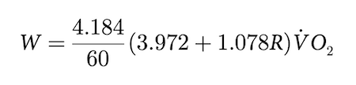
# VO2 in our data table is absolute VO2, to normalize it by the weight of each subject,
# we need weight data from the demographic excel file!
# read excel file
demo=read_excel("SubjectInfo.xlsx")
tail(demo)
| Subject No | Age | Reported Weight (kg) | Reported Length (cm) | Gender | Level Slow | Level Walk | Weight from force plates(kg) |
|---|---|---|---|---|---|---|---|
| <chr> | <dbl> | <dbl> | <dbl> | <chr> | <dbl> | <dbl> | <dbl> |
| Sub8 | 21 | 57 | 173 | F | 599.2760 | 596.3572 | 60.93951 |
| Sub9 | 25 | 58 | 170 | M | 575.0346 | 587.3807 | 59.24645 |
| Sub10 | 20 | 66 | 170 | F | 673.0147 | 675.1750 | 68.71507 |
| Sub11 | 20 | 76 | 188 | M | 783.6798 | 783.4256 | 79.87285 |
| Sub12 | 33 | 70 | 178 | M | 715.1903 | 715.5865 | 72.92440 |
| Sub13 | 21 | 56 | 169 | F | 661.9267 | 658.0335 | 67.27626 |
# TIP! you could use clean_names function from the janitor package
# to clean var names so that they don't contain spaces and parentheses..
# also makes it easyt to use dplyr to mutate later #uncomment below
demo.clean = demo %>% clean_names()
dat.summdemo = merge(dat.summ,demo.clean,by.x = 'Sub', by.y = 'subject_no')
head(dat.summdemo)
| Sub | cond | incline | speed | R | VT | VE | VO2 | age | reported_weight_kg | reported_length_cm | gender | level_slow | level_walk | weight_from_force_plates_kg | |
|---|---|---|---|---|---|---|---|---|---|---|---|---|---|---|---|
| <fct> | <chr> | <chr> | <dbl> | <dbl> | <dbl> | <dbl> | <dbl> | <dbl> | <dbl> | <dbl> | <chr> | <dbl> | <dbl> | <dbl> | |
| 1 | Sub1 | rest | rest | 0.0 | 1.0537845 | 0.7031141 | 12.16978 | 328.9456 | 26 | 86 | 185 | M | 885.5529 | 891.5307 | 90.57511 |
| 2 | Sub1 | walk | downhill | 0.8 | 0.9019424 | 0.7859465 | 20.33910 | 728.5032 | 26 | 86 | 185 | M | 885.5529 | 891.5307 | 90.57511 |
| 3 | Sub1 | walk | downhill | 1.3 | 0.8661119 | 0.8409442 | 25.83893 | 1005.2468 | 26 | 86 | 185 | M | 885.5529 | 891.5307 | 90.57511 |
| 4 | Sub1 | walk | level | 0.8 | 0.8727268 | 1.0036957 | 26.00091 | 992.9288 | 26 | 86 | 185 | M | 885.5529 | 891.5307 | 90.57511 |
| 5 | Sub1 | walk | level | 1.3 | 0.8340541 | 1.0104406 | 32.61279 | 1368.0726 | 26 | 86 | 185 | M | 885.5529 | 891.5307 | 90.57511 |
| 6 | Sub1 | walk | uphill | 0.8 | 0.8661413 | 1.2505480 | 40.73454 | 1687.3811 | 26 | 86 | 185 | M | 885.5529 | 891.5307 | 90.57511 |
…after normalizing \(VO_{2}\) by weight#
dat.summdemo %>%
mutate(adjVO2 = VO2/reported_weight_kg) %>%
mutate(W = 4.184/60 * (3.972 + 1.078 * R) * adjVO2) %>%
{.->>dat.calc1}
head(dat.calc1)
| Sub | cond | incline | speed | R | VT | VE | VO2 | age | reported_weight_kg | reported_length_cm | gender | level_slow | level_walk | weight_from_force_plates_kg | adjVO2 | W | |
|---|---|---|---|---|---|---|---|---|---|---|---|---|---|---|---|---|---|
| <fct> | <chr> | <chr> | <dbl> | <dbl> | <dbl> | <dbl> | <dbl> | <dbl> | <dbl> | <dbl> | <chr> | <dbl> | <dbl> | <dbl> | <dbl> | <dbl> | |
| 1 | Sub1 | rest | rest | 0.0 | 1.0537845 | 0.7031141 | 12.16978 | 328.9456 | 26 | 86 | 185 | M | 885.5529 | 891.5307 | 90.57511 | 3.824949 | 1.362433 |
| 2 | Sub1 | walk | downhill | 0.8 | 0.9019424 | 0.7859465 | 20.33910 | 728.5032 | 26 | 86 | 185 | M | 885.5529 | 891.5307 | 90.57511 | 8.470967 | 2.920638 |
| 3 | Sub1 | walk | downhill | 1.3 | 0.8661119 | 0.8409442 | 25.83893 | 1005.2468 | 26 | 86 | 185 | M | 885.5529 | 891.5307 | 90.57511 | 11.688916 | 3.998645 |
| 4 | Sub1 | walk | level | 0.8 | 0.8727268 | 1.0036957 | 26.00091 | 992.9288 | 26 | 86 | 185 | M | 885.5529 | 891.5307 | 90.57511 | 11.545684 | 3.955388 |
| 5 | Sub1 | walk | level | 1.3 | 0.8340541 | 1.0104406 | 32.61279 | 1368.0726 | 26 | 86 | 185 | M | 885.5529 | 891.5307 | 90.57511 | 15.907821 | 5.403549 |
| 6 | Sub1 | walk | uphill | 0.8 | 0.8661413 | 1.2505480 | 40.73454 | 1687.3811 | 26 | 86 | 185 | M | 885.5529 | 891.5307 | 90.57511 | 19.620710 | 6.712065 |
Now calculating \(C_{meas}\) :#
From the Koelewijn et al paper: “The resting trial was subtracted from each walking trial. The metabolic rate was divided by walking speed to find the measured metabolic cost in J/kg/m:”
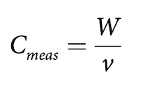
# extracting the rest trials only so we can merge it as a column next
dat.calc1 %>%
filter(cond=="rest") %>%
select(Sub,W) %>%
{.->>dat.rest}
# now merging it with the original
merge(dat.calc1,dat.rest,by='Sub',suffixes = c('','_rest')) %>%
filter(cond!="rest") %>%
mutate(W_adj = W - W_rest) %>%
mutate(C_meas = W_adj/speed) %>%
{.->>dat.calc2}
head(dat.calc2)
| Sub | cond | incline | speed | R | VT | VE | VO2 | age | reported_weight_kg | reported_length_cm | gender | level_slow | level_walk | weight_from_force_plates_kg | adjVO2 | W | W_rest | W_adj | C_meas | |
|---|---|---|---|---|---|---|---|---|---|---|---|---|---|---|---|---|---|---|---|---|
| <fct> | <chr> | <chr> | <dbl> | <dbl> | <dbl> | <dbl> | <dbl> | <dbl> | <dbl> | <dbl> | <chr> | <dbl> | <dbl> | <dbl> | <dbl> | <dbl> | <dbl> | <dbl> | <dbl> | |
| 1 | Sub1 | walk | downhill | 0.8 | 0.9019424 | 0.7859465 | 20.33910 | 728.5032 | 26 | 86 | 185 | M | 885.5529 | 891.5307 | 90.57511 | 8.470967 | 2.920638 | 1.362433 | 1.558204 | 1.947756 |
| 2 | Sub1 | walk | downhill | 1.3 | 0.8661119 | 0.8409442 | 25.83893 | 1005.2468 | 26 | 86 | 185 | M | 885.5529 | 891.5307 | 90.57511 | 11.688916 | 3.998645 | 1.362433 | 2.636212 | 2.027855 |
| 3 | Sub1 | walk | level | 1.3 | 0.8340541 | 1.0104406 | 32.61279 | 1368.0726 | 26 | 86 | 185 | M | 885.5529 | 891.5307 | 90.57511 | 15.907821 | 5.403549 | 1.362433 | 4.041116 | 3.108550 |
| 4 | Sub1 | walk | uphill | 0.8 | 0.8661413 | 1.2505480 | 40.73454 | 1687.3811 | 26 | 86 | 185 | M | 885.5529 | 891.5307 | 90.57511 | 19.620710 | 6.712065 | 1.362433 | 5.349632 | 6.687040 |
| 5 | Sub1 | walk | uphill | 1.3 | 0.8315770 | 1.4630620 | 58.84244 | 2540.5691 | 26 | 86 | 185 | M | 885.5529 | 891.5307 | 90.57511 | 29.541501 | 10.029119 | 1.362433 | 8.666686 | 6.666682 |
| 6 | Sub1 | walk | level | 0.8 | 0.8727268 | 1.0036957 | 26.00091 | 992.9288 | 26 | 86 | 185 | M | 885.5529 | 891.5307 | 90.57511 | 11.545684 | 3.955388 | 1.362433 | 2.592955 | 3.241194 |
Visualizing measured metabolic cost \(C_{meas}\)#
Finally after all that we have the variable we want to plot.
thm = theme(
plot.title = element_text(colour = "black",size = 35, face = "bold", hjust = 0.5),
axis.ticks.length = unit(-0.3,"cm"),
axis.line = element_line(colour = "black",size = 1),
axis.ticks = element_line(colour = "black",size = 1),
axis.text = element_text(colour = "black",size = 35),
axis.text.x = element_text(lineheight = 1.1, margin = margin(t = 20)),
axis.title.y = element_text(size=35, colour = "grey35", face = "plain",
lineheight = 1.1, margin = margin(r = 10)))
Warning message:
“The `size` argument of `element_line()` is deprecated as of ggplot2 3.4.0.
ℹ Please use the `linewidth` argument instead.”
options(repr.plot.width = 12, repr.plot.height = 8)
repro.fig =
# FUNCTION CALL
ggplot(dat.calc2, aes(x = incline,y = C_meas, group = speed, label = speed)) +
# LAYERS THAT SUMMARIZE WHILE PLOTTING! - this is one of the most powerful features of ggplot
stat_summary(geom = "bar", fun.y = mean, col = NA, fill = "black", width = 0.7, na.rm = TRUE,
position=position_dodge(width = 0.82, preserve = 'single')) +
stat_summary(geom = "errorbar",fun.data = mean_se, width = 0.15, lwd=2.5, col="darkgray", na.rm = TRUE,
position=position_dodge(0.82, preserve = 'single')) +
stat_summary(geom = "text", fun.y = mean, position = position_dodge(0.82, preserve = 'total'), na.rm = TRUE,
vjust = -1.25, size = 10) +
# AXIS LIMITS
coord_cartesian(ylim = c(0.31,6.75)) +
# LABELS
scale_x_discrete(labels = c("Downhill", "Level", "Uphill")) + # capitalize label initials :/
labs(title = "Pulmonary Gas Exchange", x = "", y = "Measured Metabolic\nCost [J/kg/m]") +
theme_classic() + thm
repro.fig
Warning message:
“The `fun.y` argument of `stat_summary()` is deprecated as of ggplot2 3.3.0.
ℹ Please use the `fun` argument instead.”
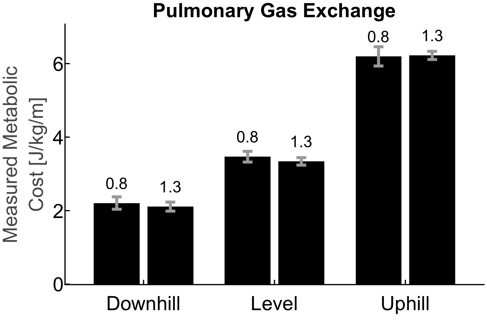
Saving your graph#
# saving your figures as image files
ggsave(file='reproduced_figure.svg', plot=repro.fig, width=12, height=8)
Additional Resources#
GGPLOT book: https://ggplot2-book.org/introduction.html#what-is-the-grammar-of-graphics
R Graphics Cookbook: https://r-graphics.org
Try it yourself!
Can you plot the graph above as a boxplot where the color is determined by
speed?What aspects of the graph would you be changing?
Can you overlay individual data points on top of that new boxplot?
Can you plot a scatterplot that shows
Ageon the x against metabolic costC_meason the y?Then, facet it by
inclineandspeed?